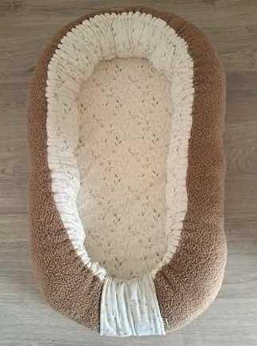
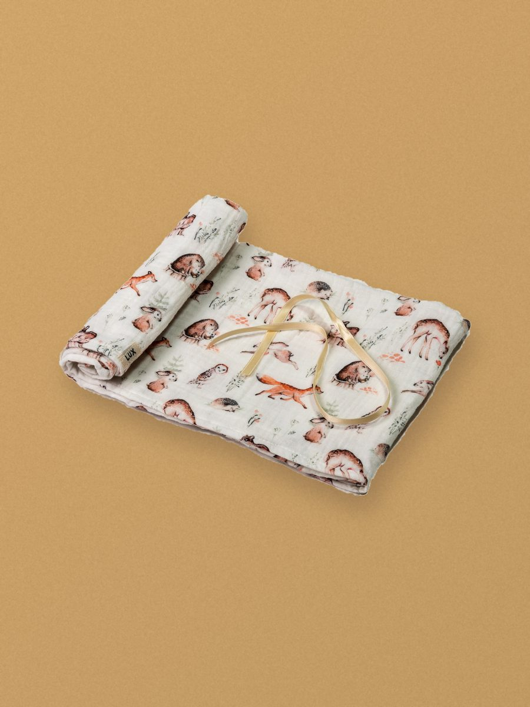
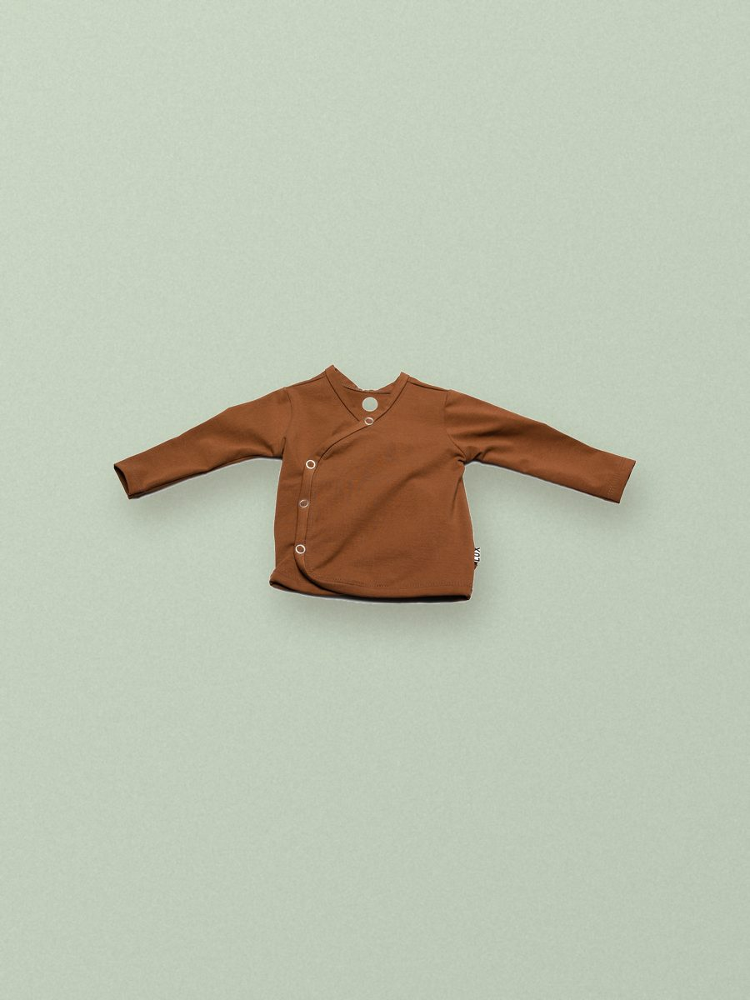

Samen
ontworpen,
met de hand
gemaakt
Carien Geurts
Atelier Ospel
“Hoe bijzonder is het om één van de eerste pakjes voor iemand te mogen maken.”
Over Carien
Uitgelicht
Ieder nieuw leven is bijzonder.
De kraamcadeaubox: handgemaakte babyproducten in één thema, met naam en geboortedatum. Zelfs de doos is persoonlijk.
Bekijk de kraamcadeaubox001 — De werkwijze
Samen
kiezen
Samen kies je wat het wordt, en in welke stof, kleur en maat.
Van babynest tot kraamcadeaubox of één gepersonaliseerd item. Ook prematuurmaten.
Persoonlijk
maken
Altijd met naam of eigen detail.
Borduren of belettering op kleding, of siliconen items zoals een bijtring, speenkoord, sleutelhanger, Maxi-Cosi-hanger of mobiel.
Met zorg
gemaakt
Carien maakt elk stuk met de hand in haar atelier in Ospel.
Mooi ingepakt, klaar om op te halen of te versturen.
002 — Portfolio

“Elk stuk wordt in het atelier in Ospel genaaid, geborduurd en beletterd. Door dezelfde handen.”
Carien Geurts — Lees het verhaal004 — Over Carien
Van de eerste pakjes voor haar kleinkinderen tot maatwerk voor jou
Ik ben Carien Geurts, moeder van twee dochters en oma van vier kleinkinderen. Jarenlang maakte ik kleding voor mezelf en mijn kinderen. Sinds er kleinkinderen zijn, maak ik met veel plezier de babyuitzet en de eerste pakjes, en nu ook voor anderen. Mijn passie is maatwerk in (prematuur)babykleding: net iets anders en persoonlijks.
005 — Instagram
Volg het atelier
op Instagram
@luxmini2020
006 — Contact